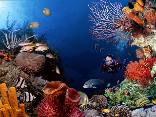
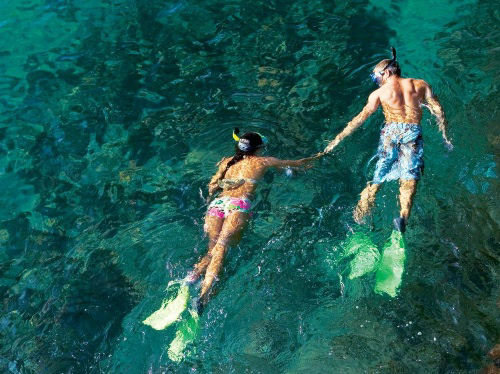
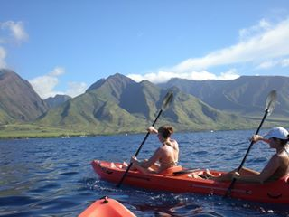
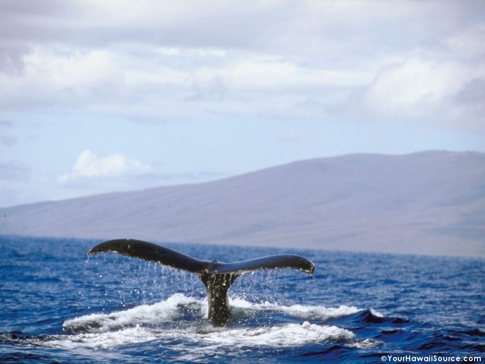

In each excursion whether on a relaxing sailboat ride to see the humpback whales or diving for dinner, you
will be treated like royalty from our well trained and experienced staff. We have a wealth of knowledge from
the locals on island that will treat you to some of the most well fished reefs for either snorkeling, scuba diving, or
spear fishing. Most of our staff have been in the waters of Maui for more than 13 years and with experience
comes the knowledge it takes to show things that other can't. Every excursion includes assistance from several of our
staff to insure that every individual in a party has been treated with answers to questions, guidance when needed, and
assistance when asked.
Carry, our marine biologist, has been studying whale patterns in Maui for more than 15 years. She has
studied the songs of the whales along with behavior patterns that guarantee a pleasant time aboard our 20 foot catamaran.
She also assists our kayaking crew to take the tour to the areas where whales travel the most. She makes the spectacle of
active whales come to life with her expertise in the whale world.
Scuba Diving

Scuba diving is an exhilarating adventure for advance swimmers looking to see the beauty in the depths of the sea. We offer
weekly classes with highly qualified ocean specialist. On these adventures, you get up close and personal with the fish, crabs,
dolphins, turtles, and sharks. We will provide all the gear necessary including wet suits, air tanks, masks, and flippers. Throughout
the week of training, we will explore hundreds of snorkeling sights. Each day going deeper than the previous day.
Snorkeling Tours

Snorkeling is a great way for our beginner and intermediate swimmers to explore the world below. Underwater wildlife is a beauty
to be shared with all who are willing to observe and preserve its beauty. On our snorkeling adventures, we introduce you to the wildlife
and give you an appreciation for its purpose in our eco-system. These are unlike any other snorkeling tours. You will not regret joining
us for this fun filled and educational tour of the reefs and surface level sea life.
Kayaking Excursions

Watch out! On this kayaking adventure, you must keep your arms, legs, and other extremities inside the kayak at all times. If you so much
as think about touching the water, then you will be put in time out. Since there are no corners in the ocean, your time out will be spent, attached
by a leash to your instructor. All jokes aside, we have been awarded numerous times on our excellent kayaking adventure. We have never had a single
complaint or heard anything but joy and laughter from our grateful customers.
Whale Watching

Splash! We bring you close enough to the whales you will not leave without getting wet. Our whale specialist introduces you to the whales in a
way no other specialist can. We also have an in house photographer who has won awards for her impossible shots. She will take your picture with a
whale, so close your friends will be convinced it has been photoshopped...guaranteed! Unlike our kayaking excursion, we encourage hands, feet, and
other extremities out of the sailboat. Some people let you swim with dolphins, but we allow you to swim with whales.